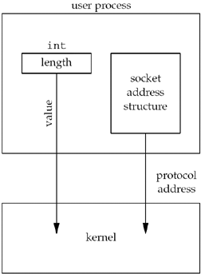
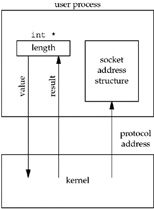

3.3 Value-Result Arguments
We mentioned that when a socket address structure is passed to any socket function, it is always passed by reference. That is, a pointer to the structure is passed. The length of the structure is also passed as an argument. But the way in which the length is passed depends on which direction the structure is being passed: from the process to the kernel, or vice versa.
Three functions, bind, connect, and sendto, pass a socket address structure from the process to the kernel. One argument to these three functions is the pointer to the socket address structure and another argument is the integer size of the structure, as in
struct sockaddr_in serv;
/* fill in serv{} */
connect (sockfd, (SA *) &serv, sizeof(serv));
Since the kernel is passed both the pointer and the size of what the pointer points to, it knows exactly how much data to copy from the process into the kernel. Figure 3.7 shows this scenario.

We will see in the next chapter that the datatype for the size of a socket address structure is actually socklen_t and not int, but the POSIX specification recommends that socklen_t be defined as uint32_t. Four functions, accept, recvfrom, getsockname, and getpeername, pass a socket address structure from the kernel to the process, the reverse direction from the previous scenario. Two of the arguments to these four functions are the pointer to the socket address structure along with a pointer to an integer containing the size of the structure, as in
struct sockaddr_un cli; /* Unix domain */
socklen_t len;
len = sizeof(cli); /* len is a value */
getpeername(unixfd, (SA *) &cli, &len);
/* len may have changed */
The reason that the size changes from an integer to be a pointer to an integer is because the size is both a value when the function is called (it tells the kernel the size of the structure so that the kernel does not write past the end of the structure when filling it in) and a result when the function returns (it tells the process how much information the kernel actually stored in the structure). This type of argument is called a value-result argument. Figure 3.8 shows this scenario.

We will see an example of value-result arguments in Figure 4.11.
We have been talking about socket address structures being passed between the process and the kernel. For an implementation such as 4.4BSD, where all the socket functions are system calls within the kernel, this is correct. But in some implementations, notably System V, socket functions are just library functions that execute as part of a normal user process. How these functions interface with the protocol stack in the kernel is an implementation detail that normally does not affect us. Nevertheless, for simplicity, we will continue to talk about these structures as being passed between the process and the kernel by functions such as bind and connect. (We will see in Section C.1 that System V implementations do indeed pass socket address structures between processes and the kernel, but as part of STREAMS messages.)
Two other functions pass socket address structures: recvmsg and sendmsg (Section 14.5). But, we will see that the length field is not a function argument but a structure member.
When using value-result arguments for the length of socket address structures, if the socket address structure is fixed-length (Figure 3.6), the value returned by the kernel will always be that fixed size: 16 for an IPv4 sockaddr_in and 28 for an IPv6 sockaddr_in6, for example. But with a variable-length socket address structure (e.g., a Unix domain sockaddr_un), the value returned can be less than the maximum size of the structure (as we will see with Figure 15.2).
With network programming, the most common example of a value-result argument is the length of a returned socket address structure. But, we will encounter other value-result arguments in this text:
The middle three arguments for the select function (Section 6.3) The length argument for the getsockopt function (Section 7.2) The msg_namelen and msg_controllen members of the msghdr structure, when used with recvmsg (Section 14.5) The ifc_len member of the ifconf structure (Figure 17.2) The first of the two length arguments for the sysctl function (Section 18.4)
|